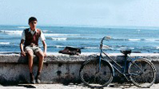

Renato

Renato, the 12 year old boy becomes increasingly obsessed with the beautiful Malèna.
His obsessions become increasingly elaborate as he uses every means possible to be around her.
He eventually steals her underwear of her washing line and in one of the funniest scenes in the movie,
his father discovers Renato in a comprimising situation with the afore mentioned underwear and calls the
doctor and priest to try and "cure" his son. The father later has his own ideas on cures as he takes Renato
to a local brothel.
As the story develops Renato becomes Malèna's faithful defender, his fantasies become all the more fantastic,
at one stage he is cast as a Roman Gladiator and she as Emporess with her thumb down to give him permission to
kill one of her detractors.